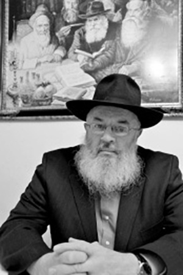

An Engineer in the Rebbe’s Service
When his friends were drafted into the US army and sent to fight in Vietnam, R’ Yaakov Stern began taking an interest in Judaism and went to learn in Hadar HaTorah. * He had yechidus and the Rebbe told him his life’s mission: to spread Torah and mitzvos in his job as an engineer. * The Rebbe displayed rare signs of fondness to R’ Stern and personally helped him with his parnasa as well as with difficulties with his parents.

Over the years, I heard many stories from R’ Yaakov about his special relationship with the Rebbe and about people who he was mekarev through his work as an engineer for the city of New York. But when I interviewed him for this article, he revealed to me the innermost layers of his unique connection with the Rebbe.
A LIFE CHANGING LINE
R’ Yaakov Stern was born in 5703/1943 to a Jewish-American family in New York that was far from religious observance. In 5721/1961, after finishing high school, he decided to study engineering at Penn State. In hindsight, it was thanks to that decision that R’ Yaakov met with the Rebbe’s shliach who went to the university as part of Merkos Shlichus and opened the window to a new world for him, the world of Chabad.
The two young Lubavitchers who started Chabad outreach at the university were R’ Binyamin Klein, later the Rebbe’s secretary, and R’ Moshe Herson, later a shliach in Morristown, New Jersey. At the university their arrival was announced, “The Chassidim are Coming!” They planted the first seeds and then invited students to a Pegisha, i.e. a Shabbaton in Crown Heights. R’ Yaakov was not aware of the first Shabbaton, but one of the students who had attended it, Rabbi Dr. Yaakov Hanoka, took a leave of absence from the university in order to attend yeshiva in Crown Heights. He later went back to school in order to complete his masters and doctorate and to be mekarev other students.
R’ Yaakov Stern, who at that time was looking for spiritual meaning in life, was happy to join the Shabbos meals arranged by Dr. Hanoka at the university. That is where he first began hearing about the significance of being a Jew.
It was at that time that he heard a line that shook up his inner world and inspired him tremendously. “I spoke with a student who had attended the Shabbaton in Crown Heights. She mentioned the verse, Shma Yisroel. In order to display my Jewish knowledge, I said, ‘I think I know that.’ She gave me a very serious look and said, ‘Hundreds of thousands of Jews were killed with these words on their lips and you just think you know it?!’
“These words shook me up when I realized how superficial my knowledge of the fundamentals of Judaism was. Her pointed question rings in my ears till this day.”
R’ Yaakov began using his free time to study Judaism and Chassidus and within a short time his learning began to influence his behavior. At a certain point, he even began growing a beard while continuing his studies in engineering and in an officers’ course in the American army.
SAVED FROM THE VIETNAM WAR
The Vietnam War had broken out, and after the United States entered the war a mandatory draft was announced. R’ Yaakov joined the ROTC (Reserve Officer Training Corps – a US Army program offered at various universities) program at the university, which granted all participants a draft deferment. At a certain point he was informed that since he was missing a certain engineering course, he could lose his exemption. He spoke to the people in charge of the officers’ course and asked what he could do to defer the draft.
“Until today, I don’t understand what happened there. But to me it was truly amazing. There was another student with me, from Reform circles, who asked for an exemption as a conscientious objector, while I did not give a reason. I was released immediately until the completion of my studies while he was asked for documentation from his rabbi, from professors at the university, and had many bureaucratic difficulties.
“Later on, when I successfully completed the last course in my engineering studies and got a high mark, I reported to the Rebbe about this and the Rebbe replied, thank you for the good news; it would be worthwhile to begin learning Chitas.
“I was amazed by this answer for it showed that the Rebbe knew I still wasn’t learning Chitas.
“From the ease with which I was saved from being drafted as compared to the other fellow, I realized that I was on the right path and that I was being watched from Above. After finishing my studies the fear of the draft hovered over me once again, so I took Dr. Hanoka’s advice and became a student in Yeshivas Hadar HaTorah.”
MY YECHIDUS WITH THE REBBE
“During the time I was learning in Hadar HaTorah, I asked for an appointment with the Rebbe to consult with him about my future. Since I had a civil engineering degree, I wrote to the Rebbe that I wanted to move to Eretz Yisroel and use my profession to help build up the country. The Rebbe thought otherwise, however, and said, ‘First get married and establish yourself in your profession and then you can think of helping Israelis.’
“I was surprised by the Rebbe’s answer and realized that every person has his destiny. I asked whether the profession and direction I had chosen were right for me as a Chabad Chassid and the Rebbe said, ‘Your goal in this world is to be an engineer and show others that you can be successful and stringent.’
“I was in shock from the fact that the Rebbe revealed my mission in this world in such an unexpected way, but after hearing this from the Rebbe, I had no doubts. The Rebbe said and the Rebbe knows.
“Since I had finished my engineering studies, I considered taking the licensing exam so I could be a licensed engineer which would enable me to get better jobs. I asked the Rebbe about this and the Rebbe said it was a good idea and gave me his bracha for success in these tests which are not at all easy.”
R’ Yaakov explained to me that the examinations consist of two, eight hour exams, in which one must score at least a 75 in order to obtain a license. Part of the first test deals with American engineering rules and standards and part is comprised of questions on various scientific topics such as physics, mechanics, mathematics, etc.
“That morning, I was asked to complete a minyan at Chovevei Torah. I couldn’t leave on time so I was late for the first part of the test. They barely allowed me to enter. I was not sorry about helping with the minyan and was confident in the fulfillment of the Rebbe’s bracha. The proctors let me in but after a short time they announced that another ten minutes remained to finish part one. I knew that I didn’t have the time to even read the rest of the questions in those ten minutes. Having no choice, I answered randomly. The miracle was that on the American part of the test I got a 73 and on the second part of the test, problem solving, I got a 77. That was an average of 75, exactly what I needed to pass!
“After working for five years I was able to take the second part of the licensing exam, and once again received the Rebbe’s bracha. At first I was licensed for New Jersey and then I was licensed for New York too.”
WHAT THE REBBE TOLD MY FATHER
Like every baal t’shuva, R’ Yaakov had to deal with his parents who did not understand what possessed their son to grow a beard and to dress as he did.
“While my mother just regarded it as something weird, my father was really opposed. As his son, I was torn between wanting to respect my parents who had raised me for twenty years and wanting to continue in the way I was convinced was right.
“After I married and we had children, my mother was so happy with the grandchildren that she was willing to ignore my way of dress and other practices. She compared her situation to that of her friends whose children had good jobs but did not provide them with any nachas. She had six grandchildren!
“My father maintained his opposition until one time, he met with one of my friends in Crown Heights, R’ Michoel Muchnik. They were both on the bus and they got into a conversation about the phenomenon of people becoming baalei t’shuva. R’ Michoel explained that the neshama yearns for something spiritual. My father, who had started looking into various spiritual ideologies at the time, said that there are other spiritual approaches such as Buddhism.
“R’ Michoel gave my father a look and said, ‘When I look at myself in the mirror in the morning, I see a Jew. If G-d wanted me to see a Buddhist, He would have created me a Buddhist! But I see a Jew because G-d wants me to be a Jew!’
“This straight talk moved something in my father’s soul. He did not become a baal t’shuva entirely, but not only did he stop bothering me about it, he even began putting on t’fillin every weekday. He did this for fifteen years and even occasionally went to daven in shul.
“Another significant event that caused my father to change his attitude was when I brought him to the Rebbe. One of the times that the Rebbe gave out something to the Chassidim in the doorway of his room, I think it was matza, when it was our turn the Rebbe held out his hand to my father. My father, who is not a Chassid, extended his hand to shake the Rebbe’s hand. Then something unusual and unexpected happened. The Rebbe grasped my father’s hand and drew him into his room and closed the door.
“I stood outside, stunned. Behind me waited a large crowd. After a few minutes, which seemed to me like an eternity, the door opened and the Rebbe and my father came out. I looked at my father and saw a new man!”
R’ Yaakov did not readily tell me what the Rebbe told his father behind closed doors. It was only after I asked on behalf of all our readers who would be curious to know what caused this big change that R’ Yaakov told me the single sentence the Rebbe said. “I want to thank you for bringing such wonderful children into the world.” This moving, powerful statement melted the remnants of opposition from his father’s heart.
WORK AND SHLICHUS
After marrying and before the birth of his first child, Yosef Yitzchok, R’ Yaakov got an engineering job in the Topographic Department of the city of New York and then in the Public Works Department. In accordance with the Rebbe’s instructions, he worked to spread Torah and Judaism among his colleagues.
“There was a Jewish socio-political organization which arranged events for Jewish employees. I used these events to repeat sichos of the Rebbe and to put t’fillin on with people.
“As time went on, I brought speakers and rabbis to teach there, like R’ Moshe Feller, who even brought a writer from The New York Times to one of his shiurim. I also brought R’ Sholom Ber Geisinsky. Slowly a group of regulars formed with an array of shiurim that took place in the city building every day during the lunch break and after work hours.”
One year, he reported to the Rebbe about a shiur that he gave in Chumash B’Reishis and he wrote that he planned on continuing with a shiur on concepts in t’filla and a class in Yiddish. In response to this report, the Rebbe wrote: learn more Halacha l’maaseh (practical Halacha).
R’ Yaakov took out old letters from a drawer and showed me reports he had given to the Rebbe about outreach he did for Pesach, Chanuka etc. In his reports, he wrote in detail about how much matza was distributed, which shiurim were given and how many people attended each shiur. He showed me a letter in which he reported to the Rebbe about a shiur he arranged before Pesach 5753 with R’ Bentzion Schaffran about the upcoming holiday and inyanei Moshiach.
After Gimmel Tammuz, he continued his activities and continued connecting city employees with the Rebbe including by writing to the Rebbe through the Igros Kodesh. Gentiles also want the Rebbe’s brachos, says R’ Yaakov. He told about an Italian who wanted a bracha for a sleep problem he had.
“I told him to look at the Rebbe’s picture hanging on the wall of my office and to ask what he wanted. Then he put money in a pushka I have on the desk. We opened a volume of Igros Kodesh and he received the Rebbe’s bracha. A few days later he went for another exam and came back with good news. ‘The Rebbe’s bracha helped me and the problem disappeared!’ he said excitedly. It was a kiddush sheim Lubavitch.”
R’ Yaakov did not only do outreach among the employees of the department, but also in the neighborhoods he was sent to in the course of his work. When he was sent to Pitkin Avenue for a while, in the Brownsville neighborhood, he located some Jews. He developed a t’fillin route and helped them put on t’fillin.
“There was a young fellow named Andrei who would put on t’fillin and be inspired but then his inspiration would dissipate. The owner of the store, a Sephardic Jew with a warm Jewish heart, suggested that I bring the guy tzitzis that he could wear all day. I did as he suggested and it helped. He stopped working on Shabbos, and subsequently his entire family became baalei t’shuva.”
Today, R’ Yaakov works more from home but he hasn’t neglected his mivtzaim. He continues to spread Judaism and keeps in touch with his former colleagues and is mekarev them through shiurim on the phone. Twice a week, he gives a half hour phone shiur to a group of his mekuravim. On Tuesday he focuses on Chumash, Moshiach and Geula, and the HaYom Yom. On Thursday it is mainly Chassidus. In this way, they keep in touch, the wellsprings are spread and the telephone enables them to overcome limitations of time and place.
THE REBBE: TAKE THE CITY TO COURT!
In the 70’s, when Crown Heights emptied out of Jews and was taken over by other ethnic groups, some violent incidents took place. Matters came to a head when an older neighbor of R’ Yaakov was beaten by hooligans. The police commander promised to put a police patrol car near the scene of the assault to protect the Jewish residents but the car never came and once again, fights broke out.
Soon after that incident with his neighbor, R’ Yaakov saw from his window how the gabbai of the Rei’im Ahuvim shul was fighting along with his sons against a group of black youth, and quickly ran down to help. Unfortunately, as soon as he got there he was hit hard over his left eye with a stick and he began gushing blood. In the midst of the commotion, R’ Yaakov was taken to the hospital where the doctors bandaged his head and said he was fine.
Ten days later, when he went back to the hospital to have the bandage removed, the doctor told him that his eye was in danger and he needed an immediate operation the next day, Shabbos. R’ Yaakov sent this urgent question to the Rebbe and was told to get a second opinion from a top doctor.
Although this was the summertime, when many Jewish doctors are away vacationing in the mountains over the weekend, he found a Jewish eye doctor. Upon examining him, the doctor said the cornea was damaged and although the next day was Shabbos, and as a Jewish doctor he understood the significance of this, the operation had to be done.
R’ Yaakov was operated on Shabbos and after being released from the hospital he had yechidus with the Rebbe. To his surprise, the Rebbe told him to file two lawsuits: one against the city of New York which failed to put a police car there despite knowing things would heat up again, and one for medical negligence. They should not have released him without checking to see that no damage was done to the cornea.
R’ Yaakov called a large law firm, Fuchsberg and Fuchsberg, who handled both suits. The lawyer in charge of his file said they would definitely sue the hospital for medical negligence, but he couldn’t sue the police because there was no precedent for that and it was dangerous.
The founder of Hadar HaTorah, R’ Yisroel Jacobson, suggested that R’ Yaakov circumvent the lawyer he was dealing with and meet with the managing partner of the firm, Mr. Fuchsberg, in his fancy Manhattan office. However, this meeting did not help. The lawyers did not dream that they could win a suit like this and did not even want to try.
(By the way, in another yechidus with the Rebbe, the Rebbe asked R’ Yaakov: Does Mr. Fuchsberg know that you are connected with Lubavitch? R’ Nissan Mangel, R’ Yaakov’s mashpia, explained to him that he had gotten a compliment from the Rebbe in that he referred to him as “connected to Lubavitch,” because there were people who lived in Crown Heights who were not mekusharim/connected. Likewise, the Rebbe’s question probably had to do with the fact that Mr. Fuchsberg himself came from a Lubavitcher background in earlier generations and even served as chairman of a Chabad dinner).
In the end, due to the insistence of the law firm, they only sued the hospital and not the police. The lawyer who represented R’ Yaakov in court was convinced of certain victory in the medical negligence suit. To his dismay, it was an utter failure with the defense counsel making the ridiculous claim that R’ Yaakov had cut himself and it wasn’t possible that the damage resulted from the blow he had sustained. The jury voted unanimously for the defense. The lawyer was shocked and afterward said it was a mistake that they hadn’t listened to the Rebbe. It was very likely that if they had also sued the police, as the Rebbe said to do, it would have created a precedent that would have helped in many future cases.
In his next yechidus, R’ Yaakov asked the Rebbe his opinion about an operation to remove scar tissue from the cornea which interfered with his ability to see. The Rebbe told him: Why shouldn’t the scar just fade away and disappear?
“After that,” says R’ Yaakov, “I waited for this to happen and one day, the scar just vanished. By the way, I checked with doctors and today, doctors are not in favor of an operation like that because the chances of success are low and the recovery is exceedingly slow.”
WHY SHOULD WE LOSE OUT?
Toward the end of the interview, I asked R’ Yaakov whether he has a message for baalei t’shuva, something that can strengthen them in their journey filled with possible pitfalls and upheavals. Without thinking twice he said that when people become baalei t’shuva, they need to know that the baggage from the past does not disappear. It is necessary to work with it but at the same time, a new, spiritual, wonderful dimension is added of Torah and mitzva observance and the world of Chassidus.
“Personally, I feel that being here in Crown Heights is like Gan Eden. There are rabbanim, mashpiim, shiurim in Nigleh and Chassidus, and most importantly, we have the Rebbe here!”
In conclusion, R’ Yaakov added an important insight. “A baal t’shuva needs to always feel ‘why should we lose out.’ A baal t’shuva cannot suffice with the existing situation. He must always strive to be better! If he identifies a good practice of Chassidim that he did not yet acquire, he should ask himself, why should we lose out? And he should make every effort to attain that level. The same is true for inyanei Moshiach and Geula. We need to strive to truly ‘live’ with inyanei Moshiach and Geula and as the Rebbe says, we need to open our eyes. And even before we succeed in truly ‘living’ it, not to delay reaching out to others and spreading the Besuras Ha’Geula and the Goel as the Rebbe wants.
“In the end, this cry of ‘why should we lose out,’ and the inspiration that results, will lead to the complete hisgalus of the Rebbe MH”M immediately.”
“LETTING” THE REBBE DO A MITZVA
After the legal suits were concluded, as described in the article, R’ Yaakov had another yechidus. “In this yechidus, the Rebbe asked me, ‘Can I loan you money?’ At first I did not understand why the Rebbe was suddenly offering me a loan. My financial situation was fine and I did not need additional money. And yet, I was afraid that if I took a loan, I would not be able to repay it. So I politely refused.
“But the Rebbe persisted and asked, ‘Are you sure?’ I said yes, and added that I did not know when I would be able to repay a loan to the Rebbe. The Rebbe said, ‘That you cannot pay me back now does not mean that you won’t be able to repay it a while from now.’
“I felt uncomfortable and tried to beg off with various excuses and then the Rebbe said the following line, ‘You don’t want to let a Jew do a mitzva?’
“After a line like that, of course I could not refuse and I said that I would take the loan. The Rebbe wrote me a check for $500 and said, ‘Return it when you feel you can.’”
Time passed and R’ Yaakov dropped off a check at the secretariat to repay the loan. “I gave in the check but inside I felt that I was not yet ready to repay the loan. What happened was, the Rebbe did not cash this check. Later on, when I felt truly ready to repay the loan, I gave another check for $500 and the Rebbe cashed it.” R’ Yaakov expressed his amazement at the Rebbe’s ruach ha’kodesh and generosity.
“During the years to come, when I was a young man in the community, the Rebbe occasionally gave me envelopes with money. Once it was $350, once $500. I would be called by the secretaries and told they had an envelope for me. When I asked the ‘experts’ of that era to explain this, they said, ‘Apparently the Rebbe is giving you a lot of brachos.’”
Beis Moshiach (staff). "An Engineer in the Rebbe’s Service." Beis Moshiach, no. 924 (April 30, 2014).